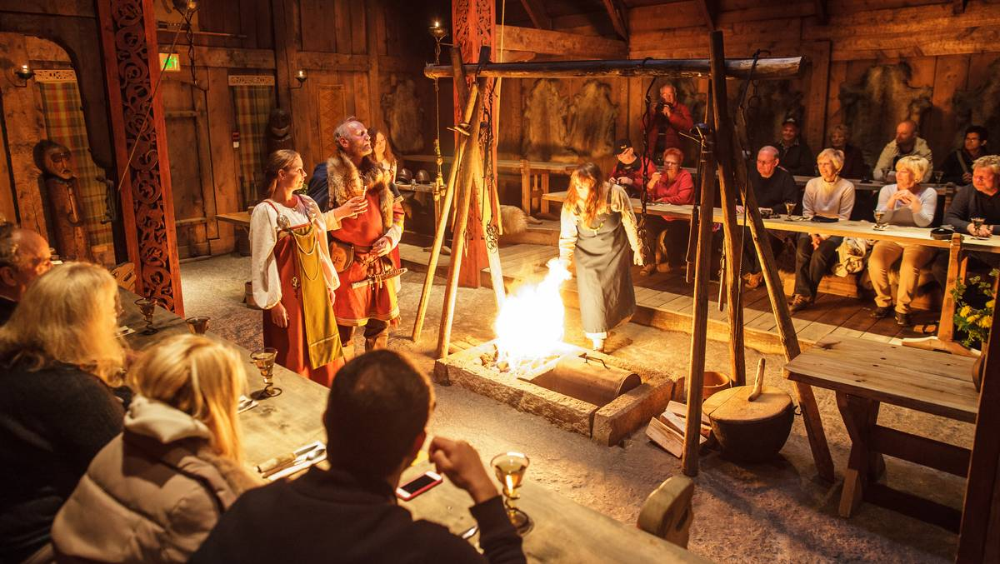
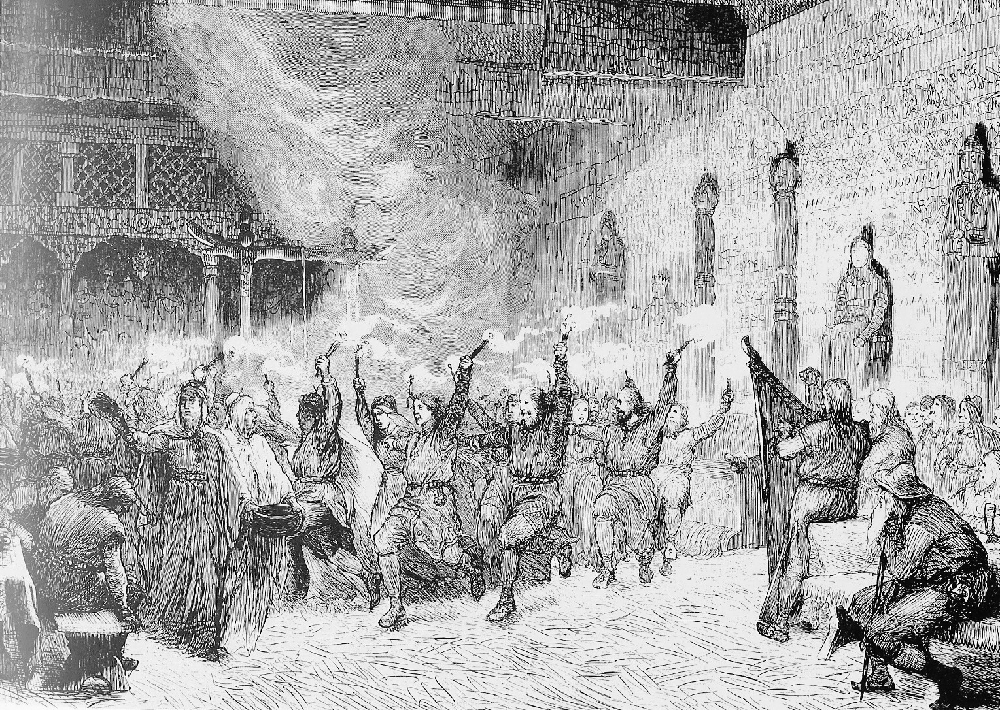
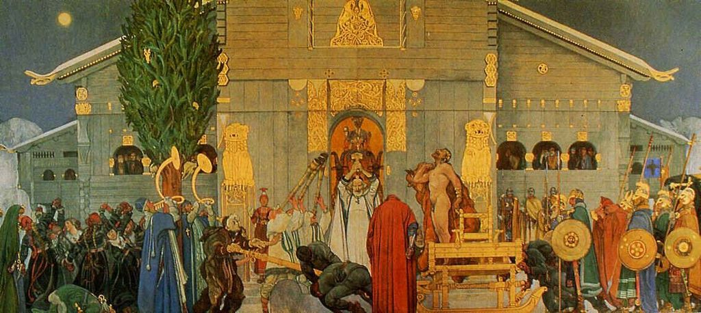

Jul i førkristen tid
Midtvinterdagen (også kalt juleblot, midtvinterblot, jól, torreblot og hökunótt) var opprinnelig en hedensk offerfest som fant sted ved første fullmåne
etter vintersolverv, eventuelt første fullmåne etter første nymåne etter vintersolverv. Dagen ble etterhvert fastsatt til solkalenderen (den Julianske Kalenderen)
i stedet for månekalenderen, 28 dager etter vintersolverv. Dette markeres på primstaven på den 12. januar, som også er halvveis mellom første vinterdag og første sommerdag.
Dagen er avmerket på primstaven som prikker. Visted skriver at 14. januar var midtvinterdagen og hedensk jul, mens 13. januar var midtvinternatten.

En moderne gjentolkning av hvordan feiring av Jòl kan ha sett ut i vikingtid
Midtvinterdagen er altså dagen da de norrøne feiret Jul, som således altså var synonym med midtvinter, da landet var på det kaldeste, og altså ikke ved vintersolverv,
slik mange har trodd. Det er imidlertid noe uklart hva det var folk egentlig feiret for. Noen hevder at det var til ære for Sola, slik at den skulle komme tilbake.
Andre at det var til fruktbarhetsguden Frøy. Noen mener også at feiringen kunne vært til ære for de døde. Torreblot skal i henhold til Orkneysagaen ha blitt innstiftet
av Torre, far til Nor, Gor og Goe. Goeblot blei feiret om våren, eller den markerte vårens begynnelse. Fra Nor har vi fått navnet Norvegr, Norge, ettersom sagaen forteller
at Norvegr var veien han fulgte på sin reise fra Bottenviken over Kjølen til stedet som seinere ble Trondheim, oppkallt etter Nors sønn Trond, og så videre, på jakt etter
Goe som hadde blitt borte ved innstiftelsen av Torreblot. Det viste seg, når Nor og Gor omsider finner Goe at hun likevel ikke hadde blitt bortført mot sin vilje, men at hun
hadde forelsket seg i Jotunkongen Rolf av Berg (Rolf i Berget), sønn av Svadejetten.
Midtvinterdagen ble regnet som en av årets 32 «farlige dager» (i henhold til den danske astronomen Tycho Brahe), altså dager det var knyttet overtro til.
Denne morgenen var det svært viktig at man først kledde på sin høyre side, da dette ville bringe lykke. Og ulykke om man begynte med å kle seg på sin venstre side først.
Det er ingen kirkelige tradisjoner knyttet til denne dagen, bortsett fra at den regnes som en minnedag for benediktinermunken Reinhold.
Norrøn juleblot
Blot var trolig det viktigste ritualet for tilhengerne av den norrøne religionen i vikingtiden. Ved blotene ble gjenstander, dyr eller mat og drikke ofret til guder og makter
for å styrke dem og bidra til å opprettholde balansen i verden. Det som ble blotet, ble kalt blotfe. En sentral del av blotet var et felles festmåltid av kjøtt fra offerdyrene og øl og mjød.
Måltidet skapte fellesskap både mellom deltagerne og mellom mennesker, guder og andre makter.
Blotene kunne være private, eller store offentlige arrangementer, ofte arrangert av personer med høy sosial status i samfunnseliten. Selve seremonien ble trolig ledet av religiøse spesialister
som hadde ansvar for at blotene ble riktig utført i henhold til sed og skikk. På Island ble slike spesialister kalt gòde eller en gydje.
Blot ved årstider og kriser
I Ynglingasaga forteller Snorre om tre årlige blot: Sent på høsten ble det blotet for godt år, Joleblotet ble holdt midtvinters for den kommende avlingen, og Sigersblot ble holdt om våren for krigslykke.
I tillegg til de faste blotene ble det blotet ved spesielle livssituasjoner og kriser som fødsel og begravelser, krig og hunger.
Blotene ble holdt til ære for gudene, men også andre makter som diser og alver. De mest kjente av disse er diseblot og alveblot. Diseblotene ble holdt for mytiske kvinnelige vesener,
blant andre åsynjer, valkyrjer og norner. Alveblotene var sterkt knyttet til dyrking av forfedre. Et slikt blot blir beskrevet i Austrfararvisur i Olavssagaene. Her omtales alveblotet
som en årlig religiøs fest knyttet til ætten og forfedrene.
Blot kunne foretas under åpen himmel eller i hus. Slike steder, både plasser under åpen himmel og bygninger, kunne kalles horg, ve eller hov. Blot og andre riter kunne også holdes i
spesielle lunder som ble ansett som hellige. Lunder har også en plass i den norrøne mytologien, slik som Hoddmimes holt, hvor Liv og Livtrase gjemmer seg under ragnarok, og Barre-lund,
hvor Frøy og Gerd forenes. I skriftlige kilder nevnes det to særlig viktige religiøse bygninger: et i Uppsala i dagens Sverige og ett på Mære i dagens Trøndelag.

Blotene på Lade
I Håkon den godes saga fortelles det om blotene på Lade. Lade var ladejarlenes hovedsete, og her hadde Håkon Sigurdsson Ladejarl et hov. I dette hovet var det satt opp figurer av Tor og av
slektens spesielle beskyttere Torgerd Hølgabrud og hennes søster Irpa.
Alle bøndene i området kom sammen her for å blote og hadde med seg mat og øl. Det ble ofret alle slags dyr, men hester er særskilt nevnt i sagaen. Blodet fra dyra ble smurt på gudefigurene,
veggene i og utenfor hovet og også på deltagerne. Kjøttet ble tilberedt i kjeler som hang over ilden i midten av hovet til et felles festmåltid. Snorre forteller i sagaen at det ble drukket
mange skåler: først for Odin, så for kongen, deretter for Njord og Frøy, deretter for venner og forfedrene. Til slutt tok mange også en Brageskål, som var en skål for storverk og skaldskap.
Blotene i Uppsala
Misjonæren Adam av Bremen skrev rundt år 1070 at det fantes et tempel i Uppsala. Det var dekorert med gull, og inni stod det tre figurer: Tor i midten med Odin og Frøy på hver sin side.
Hvert niende år skal Svearne ha holdt et stort blot i tempelet i Uppsala. Da ble det ofret ni vesener av hankjønn, og kroppene ble hengt opp i en hellig lund. Under seremoniene ble det
sunget sanger som den kristne Adam av Bremen mente var så uanstendige at han ikke ville gjengi dem. Han var også opprørt over at de kristne må kjøpe seg fri for å slippe å delta i blotene.

Mennekse som blot-offer
Bloting av mennesker er nevnt flere ganger i skriftlige kilder og kan også tolkes ut av arkeologisk materiale. Det er derfor mulig at slike ofringer kan ha forekommet. Det kan ha vært blotet krigsfanger
og treller, men også høytstående personer kan ha vært blotet. Kongelige personer ble holdt ansvarlig både for godt år og uår. Derfor kunne de selv bli ofret ved uår eller andre kritiske situasjoner.
Blotene av Ynglingekongene Olav Tretelgja og Domalde, som Snorre beretter om i Ynglingatal, er eksempler på dette.
Et eksempel på menneskeofring ved en kritisk situasjon finnes i Jómsvikinga saga. I følge sagaen skal Håkon Sigurdsson Ladejarl ha ofret sin sju år gamle sønn Erling til slektens guddommelige beskytter 7
Torgerd Hølgabrud. Da det så ut som om han skulle tape slaget ved Hjørungavåg, gikk han i land og ba Torgerd Hølgabrud om hjelp mot at han ofret sønnen.
Misjonæren Adam av Bremen skrev om blotene i Uppsala og forteller at både dyr og mennesker ble blotet ved å bli hengt i et tre. Innholdet i denne skildringen får støtte av et motiv bestående av et tre med
hengende mennesker, avbildet på et billedteppe i Osebergfunnet.
Kilder
Norrøne skrifter som de islandske sagaene skildrer flere ganger blot og andre rituelle handlinger. Imidlertid er de fleste av disse tekstene skrevet ned flere hundre år etter at kristendommen ble innført
og praksisen rundt blot opphørte. Forfatterne var ofte påvirket av sitt eget kristne livssyn og kjennskap til seremonier utført i kirker. Likevel har en sterk muntlig fortellertradisjon bidratt til at de
norrøne skriftlige kildene kan ha stor verdi som kilder.
Kilde:
Wikipedia